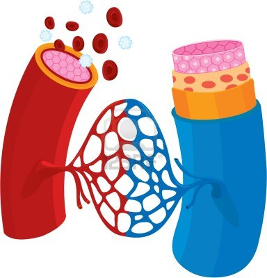

Técnica para su fabricación | |
| Tecnología de biorrecubrimiento: el material ideal para vasos sanguíneos artificiales debe tener las características de antitrombosis, antiagregación plaquetaria, buena histocompatibilidad y ausencia de reacción inflamatoria. Mejorar la adhesión de las células endoteliales vasculares a la pared interna de los materiales vasculares, mejorar los antitrombóticos, anticoagulantes y mejorar la permeabilidad del flujo sanguíneo a largo plazo. |  |